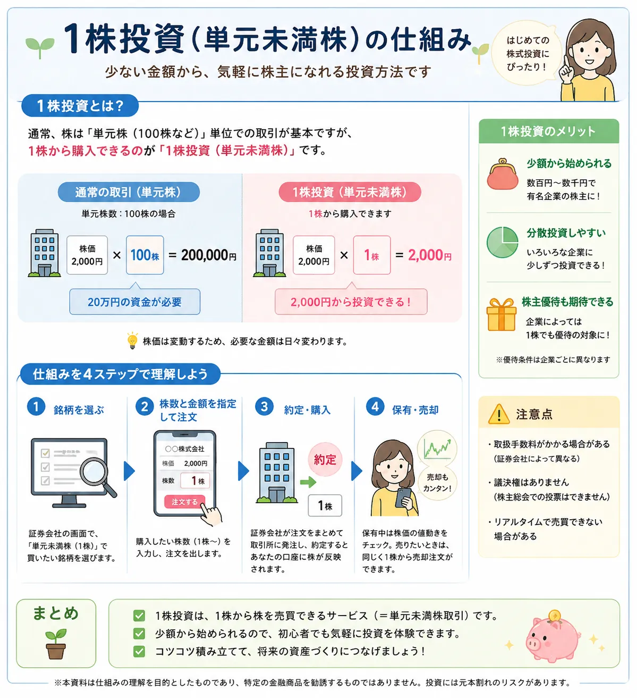

投資の基礎知識
1株投資（単元未満株）とは？初心者でも少額から株を始められる仕組みを解説
日本株は一般的に100株単位で売買されますが、証券会社の単元未満株サービスを利用すると、対象銘柄を1株から購入できる場合があります。少額から経験を積みやすい一方で、注文方法、手数料、議決権、株主優待などは通常の単元株と異なることがあります。仕組みと注意点を理解してから利用することが大切です。
Overview
1株投資の仕組みを最初に整理

- 通常の日本株は、1単元である100株単位の売買が基本です。
- 単元未満株サービスでは、証券会社が対象とする銘柄を1株から買える場合があります。
- 1株でも株主であり、配当を実施する企業なら保有株数に応じた配当を受け取れるのが一般的です。
- 議決権、株主優待、注文価格、売買タイミングなどは単元株と同じとは限りません。
Definition
1株投資（単元未満株）とは？
1株投資とは、証券会社が提供する単元未満株サービスを利用し、日本株を通常の売買単位より少ない株数で購入する方法です。一般的には1株から注文できるため、100株をまとめて買うより必要資金を抑えられます。
単元株とは
通常の売買単位となる株数
単元株とは、企業が定めた売買単位を満たす株式です。東京証券取引所では売買単位が100株に統一されており、株価が1,500円なら通常は約15万円に手数料等を加えた資金が必要になります。
単元未満株とは
1単元より少ない株数
100株を1単元とする銘柄なら、1株から99株までが単元未満株です。証券会社によって「S株」「ワン株」「ひと株」など異なるサービス名が付けられています。
1株から購入できる仕組み
証券会社が注文を取りまとめる
単元未満株は、通常の取引所注文と同じ形で直接1株を売買するのではなく、証券会社が顧客の注文を取りまとめて市場へ発注する方式などが使われます。そのため、注文時間や約定価格の決まり方が通常取引と異なる場合があります。
株式投資そのものの基本を先に確認したい方は、 株式投資とは？ も参考になります。
Comparison
単元株との違い
単元株と単元未満株では、必要資金だけでなく、注文方法や株主として行使できる権利にも違いがあります。比較表で全体像を確認しましょう。
| 比較項目 | 単元株 | 単元未満株 |
|---|---|---|
| 一般的な売買単位 | 100株単位 | 1株から購入できるサービスが多い |
| 必要資金 | 株価×100株が目安 | 株価×購入株数が目安 |
| 注文方法 | 指値・成行などを選べることが多い | 成行のみ、または指定時刻の価格で約定する場合がある |
| 約定機会 | 取引時間中に随時成立する可能性がある | 1日数回など、証券会社ごとに限られる場合がある |
| 議決権 | 通常は1単元につき1議決権 | 原則として議決権はない |
| 配当金 | 保有株数に応じて受け取れる | 保有株数に応じて受け取れるのが一般的 |
| 株主優待 | 企業が定める条件を満たせば対象 | 対象外が多いが、1株保有などで対象になる企業もある |
| 取扱い | 多くの証券会社で対応 | 対象銘柄・口座・手数料が証券会社ごとに異なる |
※ スマートフォンでは横にスクロールできます。
単元未満株を買い増して合計100株になれば、通常の単元株として扱われる場合があります。ただし、口座内での表示や注文方法は証券会社のルールを確認してください。
Advantages
1株投資のメリット
1株投資の強みは、株式投資の値動きや配当を少ない資金で経験しやすいことです。ただし、メリットは「利益が出やすい」という意味ではありません。
少額から始められる
株価2,000円の銘柄なら、100株では約20万円必要ですが、1株なら約2,000円から購入できます。家計に無理のない範囲で試しやすくなります。
分散投資しやすい
同じ予算でも、1社へ集中せず複数の企業や業種に分けやすくなります。ただし、銘柄数を増やすだけで十分な分散になるとは限りません。
有名企業へ投資しやすい
株価が高く、100株ではまとまった資金が必要な企業でも、1株なら購入を検討しやすくなります。値がさ株へ少額で触れられる点は大きな特徴です。
投資経験を積みやすい
実際に保有すると、決算、配当、株価変動、ニュースの影響を自分の資産として確認できます。学習目的で少額から始める方法として使えます。
少額投資全体の考え方は、 少額投資のメリット・デメリット 、分散の基本は 分散投資とは？ で詳しく解説しています。
Risks & Cautions
デメリット・注意点
1株投資は必要資金を抑えられますが、株価が下がれば損失が出ます。また、通常の100株取引より売買条件が限定される場合があります。
売買方法が通常取引と異なる場合がある
単元未満株では、リアルタイムの指値注文ができず、成行注文のみ、または前場始値・後場終値など決められた価格で約定する場合があります。注文時に見た株価と実際の約定価格が異なる可能性があります。
手数料体系を確認する
売買手数料が無料でも、取引価格にスプレッド相当のコストが含まれるサービスや、売却時のみ手数料がかかるサービスがあります。NISA口座と課税口座で条件が異なる場合もあります。
原則として議決権がない
単元未満株主には、原則として株主総会での議決権がありません。企業の経営方針に対して議決権を行使したい場合は、1単元以上の保有が必要です。
株主優待の条件は企業ごとに異なる
配当金は1株でも保有株数に応じて受け取れるのが一般的ですが、株主優待は100株以上を条件とする企業が多くあります。一方で、1株以上の保有で案内や優待を受けられる企業もあるため、各社の条件確認が必要です。
少額でも値下がりリスクはある
投資額が小さければ損失額も小さくなりやすいものの、損失率が小さくなるわけではありません。企業業績の悪化や市場全体の下落で、購入価格を大きく下回る可能性があります。
New NISA
新NISAとの関係
新NISAの成長投資枠では上場株式を購入できます。証券会社がNISA口座で単元未満株を取り扱っていれば、1株から買える場合があります。
利用できる場合がある
成長投資枠で1株投資
対応する証券会社では、単元未満株をNISA成長投資枠で購入できます。売却益や配当金を非課税にするには、NISAの条件と配当金の受取方法も確認が必要です。
証券会社ごとに異なる
対象銘柄・注文条件を確認
NISA対応の有無、取扱銘柄、売買手数料、注文受付時間、約定価格の決まり方は各社で異なります。口座開設前に公式情報を確認しましょう。
長期・積立との相性
定期的に買い増ししやすい
1株ずつ定期的に買うと、購入時期を分散しやすくなります。ただし、個別株は企業固有のリスクがあるため、長期保有すれば必ず利益が出るわけではありません。
For Beginners
1株投資は初心者に向いている？
1株投資は、最初から大きな金額を動かしたくない人や、少額で株式投資を体験したい人にとって選択肢になります。ただし、誰にとっても最適な方法ではありません。
少額で経験を積みたい人
企業の決算や配当、株価変動を実際に経験しながら学びたい人に向いています。
大きな金額を投資したくない人
100株分の資金を一度に出さず、家計に無理のない範囲から始めたい人に使いやすい方法です。
複数銘柄へ分散したい人
限られた予算を複数企業へ分けたい人に便利です。ただし、業種や地域まで意識して分散することが大切です。
個別企業の分析に時間をかけたくない場合は、複数銘柄へまとめて投資する ETFとは？ も比較候補になります。
Broker Differences
証券会社によって対応状況が異なる
単元未満株は、証券会社ごとにサービス名称、対象銘柄、注文方法、約定回数、手数料、NISA対応が異なります。単純に「1株から買えるか」だけでなく、使い方に合うかを確認しましょう。
| 確認項目 | 確認する理由 |
|---|---|
| 最低購入株数 | 1株から購入できるか、銘柄ごとに制限がないかを確認する |
| 取扱銘柄 | 東証上場銘柄のすべてではなく、各社が選定した銘柄のみの場合がある |
| 注文方法 | 指値注文が使えるか、成行のみか、約定時刻が決まっているかを確認する |
| 手数料・スプレッド | 買付・売却手数料だけでなく、価格差による実質コストも確認する |
| NISA対応 | 成長投資枠で単元未満株を購入できるかを確認する |
| 定期買付 | 毎月・毎週など自動で買い付けられるかを確認する |
※ サービス条件は変更される場合があります。最新情報は各証券会社の公式サイトで確認してください。
各社を横断して比較したい方は、 証券会社一覧比較ページ をご覧ください。特定の証券会社を一律に推奨するものではなく、取引目的や使いやすさを比較して選ぶことが大切です。
Related Articles
あわせて読みたい記事
FAQ
1株投資（単元未満株）に関するよくある質問
-
1株だけでも買えますか？
単元未満株サービスに対応している証券会社では、対象銘柄を1株から買える場合があります。すべての銘柄が対象とは限らず、注文時間や注文方法も証券会社ごとに異なります。 -
単元未満株とは何ですか？
企業が定める1単元より少ない株数の株式です。日本の上場株式は一般的に100株を1単元として売買されるため、1株から99株までを単元未満株と呼びます。 -
配当金はもらえますか？
配当を実施する企業の株式を権利確定日に保有していれば、単元未満株でも保有株数に応じた配当金を受け取れるのが一般的です。企業が配当を実施しない場合は受け取れません。 -
株主優待は受けられますか？
株主優待の条件は企業ごとに異なります。100株以上を条件とする企業が多い一方、1株以上など単元未満株でも対象になる企業があります。公式の優待条件を確認してください。 -
新NISAでも買えますか？
証券会社がNISA成長投資枠で単元未満株を取り扱っている場合は購入できます。対応口座、対象銘柄、手数料、注文方法は証券会社ごとに異なります。
Summary
まとめ｜1株投資は少額から経験を積めるが、条件確認が大切
- 日本株は一般的に100株単位で売買されますが、単元未満株サービスなら対象銘柄を1株から買える場合があります。
- 少額から始めやすく、複数企業へ分散しやすいことがメリットです。
- 少額でも株価下落による損失リスクがあり、必ず安全な投資方法ではありません。
- 注文方法、手数料、議決権、株主優待、NISA対応は通常取引と異なる場合があります。
- 利用できる銘柄やサービス条件は証券会社ごとに異なるため、公式情報を確認して比較することが大切です。
Compare Securities Accounts
単元未満株だけでなく、NISA・手数料・使いやすさも比較する
1株投資の対応状況だけで証券会社を決めるのではなく、通常の国内株、NISA、取扱商品、アプリ、情報収集機能なども含めて、自分の目的に合うかを確認しましょう。
証券会社一覧比較を見る一般ユーザー目線の体験で証券・FX・仮想通貨を確認

ご利用にあたっての注意事項
本記事は情報提供と金融教育を目的としており、特定の銘柄や証券会社の利用を推奨・勧誘するものではありません。株式投資は元本保証がなく、企業業績、相場変動、為替、金利、制度変更などにより損失が生じる場合があります。単元未満株の取扱銘柄、注文方法、手数料、NISA対応、配当・株主優待の条件は変更されることがあります。取引前に各証券会社および各企業の公式情報、契約締結前交付書面等を確認し、ご自身の判断と責任でお取引ください。